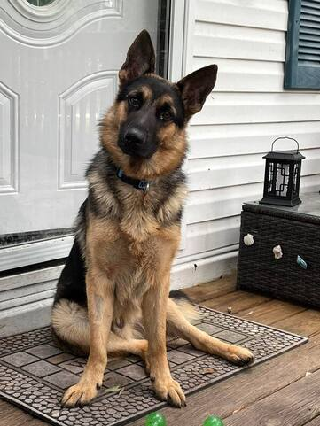
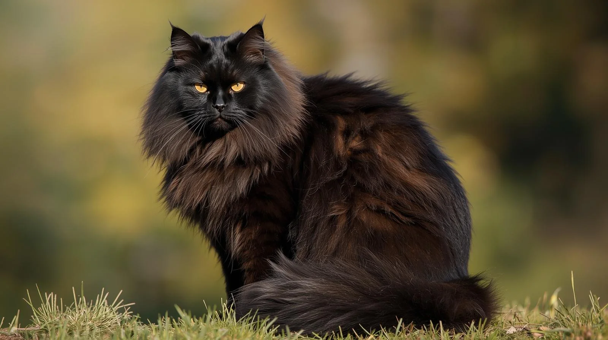
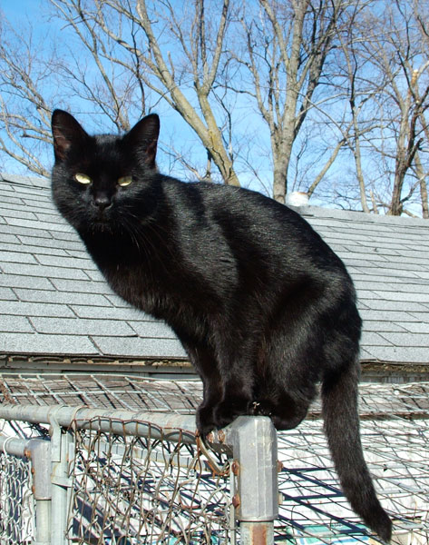
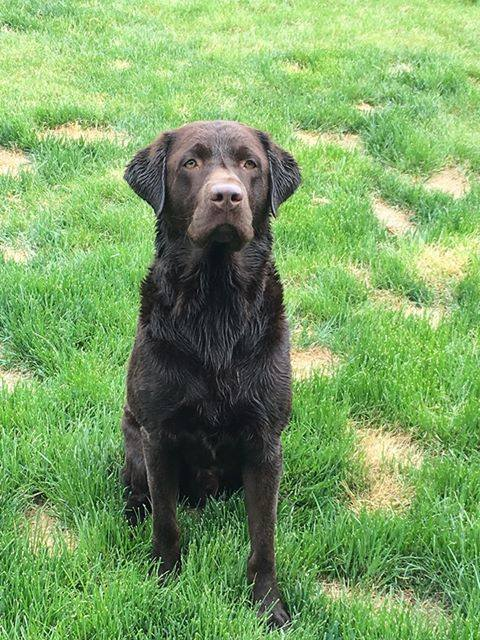

Check out our currently adotpable pets, each with varying personalities that will make each of them craved by any pet owner!

FELIX
Male, Neutered 2 Years old.
Felix is a 2 year old German Shepherd and an asbolute angel. He has black and brown fur and he weighs 62.6 lbs. He is a friendly boy that loves being around kids and is always in the mood for playtime! He loves treats and pats like any dog would, has also previously lived with kids.

NOODLES
Male, Neutered, 4 Years old.
Noodles is far past their kitten stage and has grown up and become a grumpy little fella. He weighs a mere 9.5 lbs and mostly brown fur, he's not the most playful but whenever hes tired he will cuddle you for hours. He's always ready for Dinner or bedtime, has also has experience living with other cats as well as children

MIDNIGHT
Female, Spayed, 6 Years old
Midnight is a cute well rounded cat who's ready to find a new family! She weighs a light 8.27 lbs with entirely black fur, She's litterbox trained and always looking for a copy spot to relax and people to share her affection with. She is a great fit for any home because of her experience living with Dogs, other cats, as well as children.

AVA
Female, Spayed, 2 Years old
Ava is a well trained girl and very good at showing affection. She weighs a 70.8 lbs with dark brown mixed with bright brown fur, she's house trained and sit, stay, and come trained. She is very good at basic obedience skills, and can very easily be walked out in public and while behaving well. She has lived with other dogs and well as excelling quite well in playgroups

COCOA
Male, Neutered, 8 Years old
Cocoa has a heart as warm as chocolate and becomes very affection very quickly. He weighs 49.8 lbs and has dark chocolate colored fur, He loves to lick once he gets to know you He's sit, stay, and come trained, as well as basic house training. He will get along with anybody he has known for longer than 30 minutes and will absolutely love being around children.
| Pricing | Adoption Fees | |
|---|---|---|
| Dogs | $150 | $75-$100 |
| Cats | $160 | $100-$125 |
| Please Note, we can not ship any pets to your address, you must come in person to buy them | ||